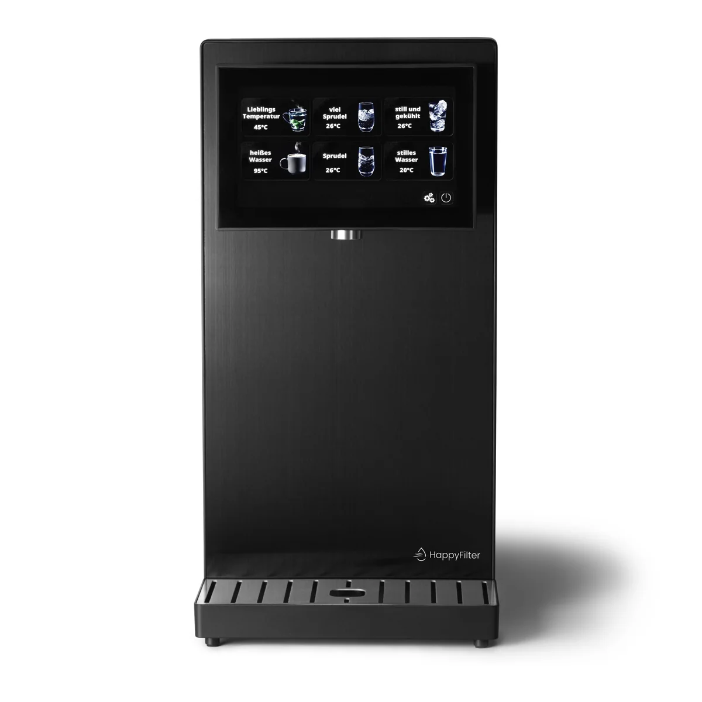

Water Dispenser
HappyFilter HappyFilter One - DER Wasserspender für Zuhause
Die HappyFilter One liefert ultrafein gefiltertes, sprudelndes, kaltes oder heißes Wasser direkt auf Knopfdruck – modern, nachhaltig und kompakt.
1.090,00 €
Technische Daten
| 3-in-1 Wassersystem | Sprudel-, Kalt- und Heißwasser – alles in einem kompakten Gerät. Ideal für Küche, Büro oder Ferienwohnung. |
| Versand | Versandkostenfrei ab 39€ innerhalb Deutschlands |
| Rückversand | 30 Tage Geld-Zurück Garantie |
| Filtertechnologie | 5-stufige Ultrafiltration mit Aktivkohle (0,01 µm Porengröße) – für hygienisch reines Wasser. |
| Temperaturbereiche | Kaltwasser bis 4 °C, Heißwasser bis 95 °C, Sprudelwasser individuell CO₂-dosierbar. |
| Leistung & Verbrauch | Heizleistung 2.200 W / Kühlleistung 100 W / 220–240 V / 50 Hz. |
| Maße & Gewicht | Abmessungen: 51 x 22 x 43,7 cm (LxBxH) / Gewicht ca. 21,5 kg. |
| Kapazität & Durchfluss | Wassertank: 5 L | Filterlebensdauer: 6 Monate | Sprudelmenge pro CO₂-Kartusche: ca. 60 L. |
| Stoffgruppe | Filterung |
| Partikel & Trübstoffe | ✓ Hoch |
| Bakterien & Keime | ✓ Hoch |
| Mikroplastik | ✓ Hoch |
| Chlor & Gerüche | ✓ Hoch |
| PFAS & Arzneimittelrückstände | ~ Teilweise |
| Salze & Wasserhärte | ✗ Bleiben erhalten |
| Artikelnummer | HFONE |
Beschreibung
Die HappyFilter One liefert ultrafein gefiltertes, sprudelndes, kaltes oder heißes Wasser direkt auf Knopfdruck – modern, nachhaltig und kompakt.
Datenhinweis
Preis, Bild und technische Angaben stammen von der verlinkten offiziellen Produktseite. Varianten und Verfügbarkeit können sich ändern.